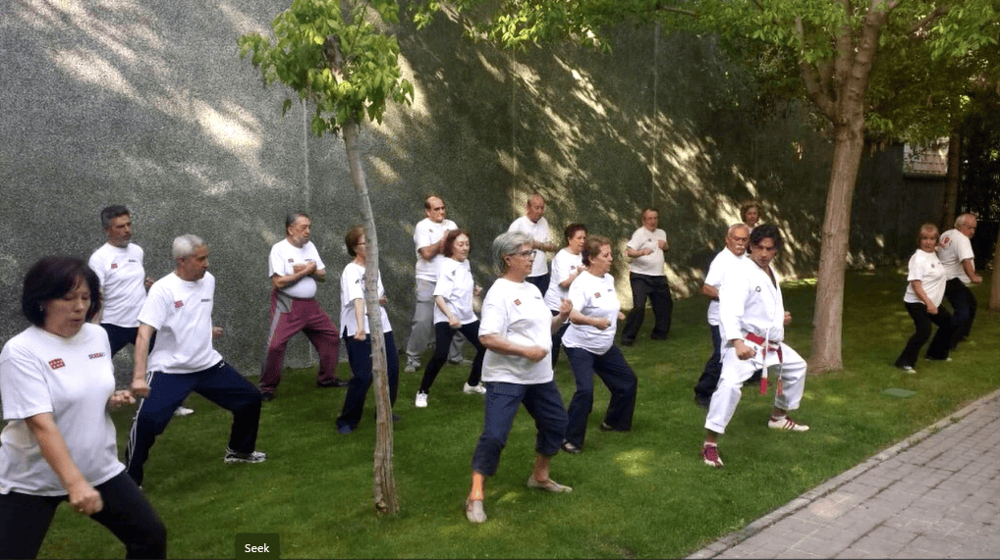
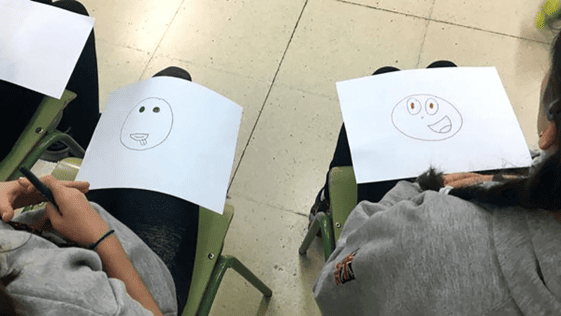
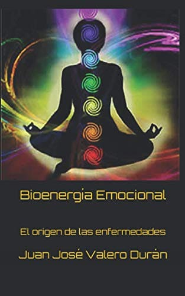
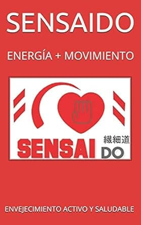
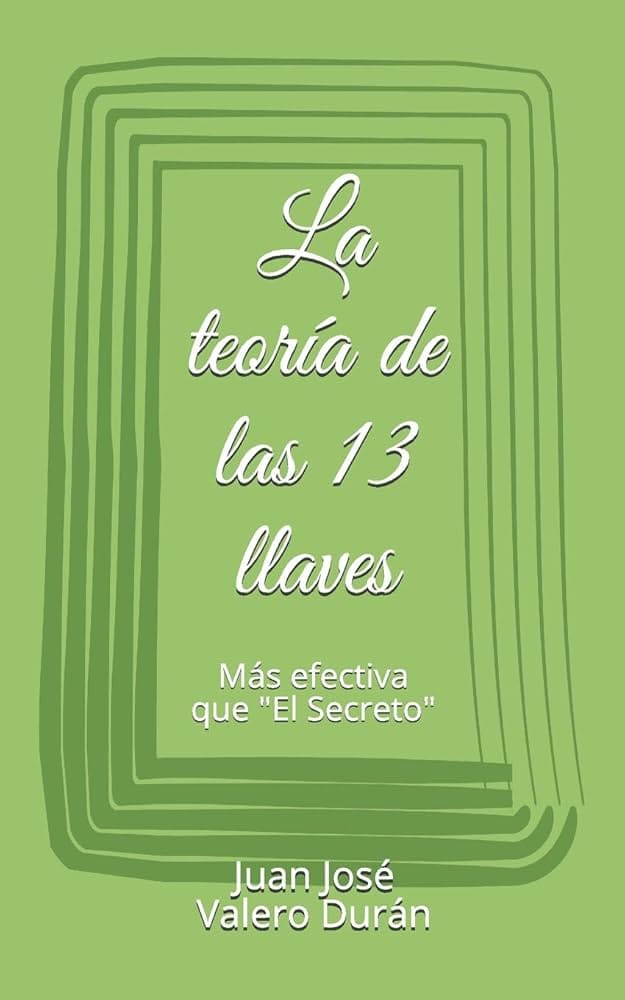
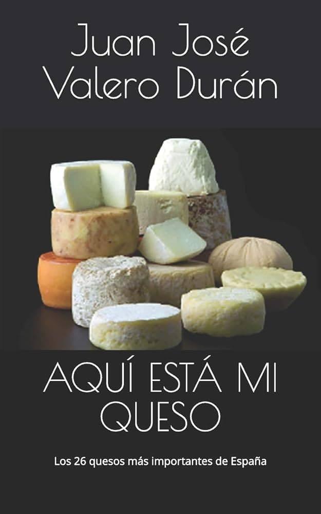

Soy Juan José Valero Durán, emprendedor y mentor con más de 30 años de experiencia en gastronomía de alto nivel, comercio internacional y desarrollo empresarial.
A lo largo de mi carrera, he colaborado con referentes como Martín Berasategui y Ferran Adrià. Soy considerado uno de los mayores expertos en quesos de España, habiendo fundado La Boulette y co-organizado el Campeonato de Quesos Artesanos Españoles.
Mi perfil combina la visión de negocio con la disciplina del Karate (Tercer Dan) y una sólida formación académica en Relaciones Internacionales. Esta mezcla de equilibrio y estrategia es la que aplico hoy como mentor en el Ayuntamiento de Madrid, ayudando a nuevos emprendedores a consolidar proyectos con propósito.
Complementos y vitaminas para tu bienestar diario.
Con más de 25 años de experiencia en naturopatía, Sensaido ofrece soluciones naturales basadas en la planificación personalizada. Su enfoque une la sabiduría ancestral con la innovación moderna.
Nuestra filosofía se inspira en conceptos japoneses fundamentales: el Ikigai (búsqueda del propósito), el Kaizen (mejora continua) y el Wabi-sabi (la belleza de la sencillez y lo auténtico).
Acompaño a personas y equipos hacia una transformación real y consciente, diseñando experiencias para desarrollar el potencial y generar cambios sostenibles.

El taller más quesero

Demostración
Taller para Emprendedores
Domina tu mente

Emociones y salud
A lo largo de los años he volcado mi experiencia y conocimientos en una serie de libros que abordan el desarrollo personal, la salud emocional y el bienestar integral.
Explorar bibliografía completa →


